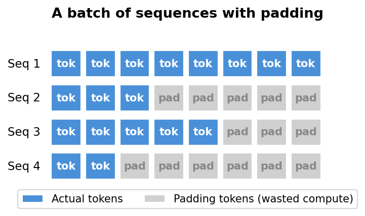

My First Year Working on LLMs
My First Year Working on LLMs
Introduction
About a year ago, I started learning about large language models. Before that, I had taken fast.ai courses, so I was comfortable with Python and deep learning concepts, but LLMs were a whole different world. I’m an undergraduate statistics student, not a computer science major, and I learned all of this outside of school while going to classes full time. Honestly, my statistics background didn’t help much either. Learning LLMs felt like starting from scratch. But the past year has been a really fun learning experience, and I want to share what that journey looked like. I hope this is useful for anyone learning LLMs without a CS background or outside of school. There are great resources online, and with a little work every day, you can learn a lot.
Early last year, I learned about Local Research Group, which is a fast.ai study group where the team was starting on an LLM project. From there, I learned about another fast.ai study group called Cluster of Stars, where Benjamin Warner was giving a talk on ModernBert. When I joined the talk, I didn’t understand much, but I just wished I understood them all. Thankfully, the study group planned to go over LLMs from the ground up. We read Sebastian Raschka’s Build a Large Language Model from Scratch1 and worked through several research papers.2 After that, we wanted to learn about reinforcement learning, so we took the HuggingFace Deep RL course and watched the Foundations of Deep RL lecture series by Pieter Abbeel. Those gave us great theoretical background, but we wanted more code, so we played with cleanrl’s implementations. Andrej Karpathy’s “Let’s Reproduce GPT-2” video was also incredibly helpful as it went deeper into the actual training process than anything else I had seen.
What surprised me most was how simple the architecture was to understand, except for attention. That part took a while, but it was fun. Also, flash attention was really fun to learn because I had no idea how GPUs actually worked under the hood. I learned that GPUs have different kinds of memory, and that fusing operations to keep data in the fast memory is a huge deal. That same idea shows up in torch.compile and libraries like Liger Kernel, which I’ll talk about later.
There were also surprising moments. I had no idea reinforcement learning was part of training LLMs. I thought RL was only for playing video games. And that LLMs simply predict the next word from the text. To make them have a conversation, you just train them on conversation data.
In another study group, Local Research Group, we worked on a research project: replicating the findings from the paper LoRA Learns Less and Forgets Less.3 The idea is to compare LoRA and its variants (rsLoRA, DoRA) against full fine-tuning to see how much each approach learns new things versus forgets old things. We’re using SmolLM2-135M as our base model and training on math and code datasets.
In this blog post, I want to walk you through what I worked on for this project. There are plenty of technical blogs written by experts for other experts about LLMs out there. This isn’t one of those. This is about what it’s actually like to work on LLMs as a beginner with my dumb mistakes and the things I wish someone had told me earlier.
Dataset Decontamination
Before training, we need to make sure our training data doesn’t contain examples from our evaluation sets. If it does, the model might look like it’s learning, but it’s really just memorizing answers it’s already seen. This is called data contamination.
To detect contamination, we used Elasticsearch, which is a search engine that lets you create searchable indices over large datasets. We indexed our training data, then queried those indices with our evaluation sets to find overlapping instances.
We followed the Tulu 3 paper’s approach4 using 8-gram matching. For each example in an evaluation set, we check whether any 8 consecutive tokens also appear in a training instance. If more than 50% of a test example’s tokens have 8-gram matches with a single training instance, we consider that a significant overlap and remove the training instance. Our teammate Jae built the tooling for this on top of Allen AI’s open-instruct decontamination scripts. I reviewed his code and performed decontamination on some of the datasets.
Very few training instances overlapped with our evaluation sets:
| Dataset | Split | Instances Removed | Data Retained |
|---|---|---|---|
| finemath | train | 64 | 100.00% |
| finemath | test | 12 | 100.00% |
| avelina-python-edu | train | 20 | 100.00% |
| avelina-python-edu | test | 7 | 100.00% |
Our datasets were clean.
Building a Faster Model
Our training library, LLM Foundry, uses HuggingFace models by default. This works fine, but there’s a hidden inefficiency: padding.
When you create a batch of sequences for training, they need to be the same length. But real data has sequences of all different sizes. PyTorch’s dataloader solves this by padding shorter sequences with special padding tokens to match the longest one in the batch. The problem is that the model still processes all those padding tokens, wasting compute on tokens that don’t contribute to learning.
This is especially wasteful with our datasets. Most sequences are short. In our code dataset, the median sequence length is just 273 tokens, and in our math dataset, it’s 919. But some sequences are much, much longer than 8192. So a single long sequence in a batch forces every other sequence to be padded with thousands of useless tokens.
The obvious fix is to remove the padding before feeding the batch to the model, and use Flash Attention’s variable-length function (flash_attn_varlen_func) to handle sequences of different lengths. But when our teammate Vishal tried forcing HuggingFace’s model to use this approach, training actually got 20% slower.5 The reason was HuggingFace’s implementation unpads and re-pads the batch at every single attention layer. The overhead from doing this repeatedly wiped out any savings from skipping the padding tokens.
So we decided to build our own SmolLM2-135M from scratch.

This is especially wasteful with our datasets. Most sequences are short. In our code dataset, the median sequence length is just 273 tokens, and in our math dataset, it’s 919. But some sequences are much, much longer than 8192. So a single long sequence in a batch forces every other sequence to be padded with thousands of useless tokens.
Writing the Model from Scratch
I originally wanted to write the model from scratch as a learning experience and to test myself. SmolLM2-135M has a similar architecture to Llama 2, so I implemented it component by component: RMSNorm, grouped query attention, the SiLU-gated MLP, and RoPE positional embeddings. Most of these were fairly straightforward. RoPE was a bit tricky, but studying the ModernBERT code helped me understand it.
To check my work, I compared my outputs against HuggingFace’s implementation. At first, my outputs didn’t match, and I spent a while debugging before realizing the difference came from converting between bfloat16 and float32. Turns out, it’s common practice to compare outputs with some tolerance rather than expecting exact matches. This was a useful lesson that helped me later when I was testing different implementation details like Flash Attention versus eager attention.
Throughout the process, I learned that building things slowly and testing often was essential. When I wrote too much code without stopping to test, it became really difficult to figure out what went wrong. Small steps, frequent checks.
Once I had a working model, I was able to add unpadding the right way: unpad once at the beginning of the model, process all the sequences as one long concatenated batch using flash_attn_varlen_func, and avoid the unpad-repad overhead that slowed down HuggingFace’s implementation.
Results
On my RTX 3090, the baseline using HuggingFace’s SDPA attention processed about 20k tokens per second. With my custom model using unpadding and Flash Attention 2, that went up to 30k tokens per second. And because unpadding removes the padding tokens, I could fit a larger micro batch size. Going from 4 to 8 doubled the throughput to about 50k tokens per second.
One thing to note is that these numbers still count padding tokens in the throughput calculation, so the actual speedup is even larger than it looks.
torch.compile
PyTorch’s torch.compile optimizes the model by fusing operations and generating efficient GPU kernels. It has many different options, and our teammate Benjamin suggested trying several combinations: dynamic, epilogue_fusion, max_autotune, coordinate_descent_tuning, and triton_cudagraphs.
I ran experiments with all the different combinations. The best one turned out to be dynamic with epilogue_fusion and max_autotune. The dynamic option was important for us because our unpadded sequences have different shapes each batch. Adding cudagraphs on top of that actually hurt performance because cudagraphs need to recompute the graph every time the input shape changes, which defeats the purpose when using dynamic shapes. The coordinate_descent_tuning option took longer to compile but didn’t give a meaningful speedup. Compilation took a couple of minutes, but that doesn’t matter much for long training runs.
Sequence Packing
Unpadding solved the wasted compute problem, but introduced a new one: out of memory errors in the middle of training. With unpadding, each batch has a different size depending on the sequences that happen to land together. If a bunch of long sequences end up in the same batch, the GPU runs out of memory. Do we have to set the batch size to the lowest possible just in case? No!
The solution is sequence packing, inspired by ModernBERT. Instead of letting PyTorch randomly batch sequences together, we pack sequences into fixed-size batches ahead of time. This way, every batch uses the same amount of memory, and we can safely use larger batch sizes without worrying about random spikes.
My first attempt had very jagged throughput. Some batches were packed well and others weren’t, causing the tokens per second to bounce around wildly. Benjamin suggested using larger batch sizes for better packing efficiency, which made sense. With a small batch, you have fewer sequences to arrange, so some batches end up with wasted space. With a larger batch size of 40, packing efficiency jumped to over 99%.
Combined with torch.compile, sequence packing brought throughput up to about 80k tokens per second on my RTX 3090. That’s 4x the original 20k we started with using HuggingFace’s SDPA.
Liger Kernel
Liger Kernel is a library of Triton kernels from LinkedIn that optimizes common LLM operations by fusing them together. The idea is the same as torch.compile: keep data in the GPU’s fast on-chip memory (SRAM) instead of constantly moving it to and from the slower main memory (HBM). Liger provides optimized kernels for RMSNorm, SwiGLU MLP, RoPE, CrossEntropy, and FusedLinearCrossEntropy.
I tested each kernel individually to see which ones actually helped. Liger’s RMSNorm and MLP kernels both improved tokens per second. However, I couldn’t use Liger’s RoPE because it wasn’t compatible with our sequence packing setup, so we stuck with our ModernBERT RoPE implementation.
The most interesting finding was FusedLinearCrossEntropy (FLCE). It reduced GPU memory from 12 GB to 8 GB, which is impressive. But throughput dropped from 27k to 23k tokens per second. My hypothesis for the slowdown is FLCE is designed for large models with huge vocabularies where the logit tensor becomes enormous. For our tiny 135M parameter model, the overhead of chunking wasn’t worth it.
I thought I could just enable all Liger kernels and get a free speedup, but that wasn’t the case. For small models, the individual kernel overhead can outweigh the benefits. Lesson learned: always benchmark each optimization individually.
Conclusion
This project taught me so much more than I expected. I came in knowing some Python and deep learning basics, and ended up learning about GPU memory hierarchies, Elasticsearch, Triton kernels, and how to debug floating point precision issues. A year ago, I didn’t even know what Flash Attention was. Now I’ve written a model from scratch that uses it.
The biggest lesson was that working on LLMs is not as intimidating as it looks from the outside. Yes, the papers are dense and the systems are complex. But if you break things down into small steps, test often, and aren’t afraid to make mistakes, you can figure it out. Most of my progress came from getting something wrong, spending time confused, and then finally understanding why.
I’m grateful to the Local Research Group and Cluster of Stars study groups for making this possible. Working with teammates like Benjamin, Vishal, and Jae made everything more fun. Special thanks to the fast.ai community for creating a space where a statistics student with no CS degree can learn to train language models.
The project is still ongoing. We’re running hyperparameter sweeps and will soon have results comparing LoRA, rsLoRA, DoRA, and full fine-tuning.
If you’re thinking about learning LLMs but feel like you don’t have the right background, just start. You’ll be surprised how far you can get.
In case you want to take a look at more detailed dialog with weights and bias plots and my conversation with solveit, you can take a look here. From this report, I was able to understand the project better and write this blog easily.
Footnotes
LLMs from Scratch by Sebastian Raschka↩︎
Papers we read include: OLMo 2 Furious, DeepSeekMath, Direct Preference Optimization, Training Language Models to Follow Instructions with Human Feedback, and Tulu 3.↩︎
Biderman et al., “LoRA Learns Less and Forgets Less,” published in Transactions on Machine Learning Research (08/2024).↩︎
Ivison et al., “Tulu 3: Pushing Frontiers in Open Language Model Post-Training” (2024).↩︎
Vishal Bakshi, “Debugging Flash Attention in LLM-Foundry (and a 20% Slow Down!)”↩︎